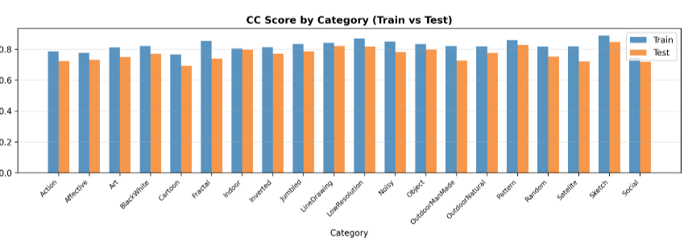
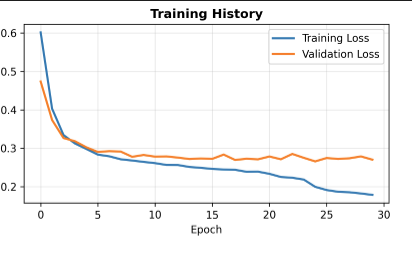

1. 问题描述
1.1 研究背景
图像显著性预测是计算机视觉领域的重要研究方向，旨在模拟人类视觉注意力机制，预测图像中最能吸引人眼关注的区域。该技术在图像压缩、目标检测、广告设计等领域具有广泛应用价值。
1.2 问题定义
输入：彩色RGB图像（待检测图像） 输出：灰度显著性图，像素值越高表示该区域越容易吸引视觉注意力 目标：构建深度学习模型，使预测的显著性图与人眼注视热图（ground truth）尽可能一致
1.3 数据集特点
- 训练集：1600张图像及对应显著图
- 测试集：400张图像及对应显著图
- 图像类别：20种不同类型（Action、Affective、Art等）
- 数据格式：RGB图像 + 灰度显著图（FIXATIONMAPS）
1.4 评估指标
- 相关系数（CC）：衡量预测图与真实图的线性相关性，范围[-1,1]，越接近1越好
- KL散度：衡量两个概率分布的差异，值越小越好
- MSE：均方误差，衡量像素级差异
2. 实验模型原理和概述
2.1 模型选择动机
选择U-Net作为基础架构的原因：
- 像素级预测能力：U-Net擅长密集预测任务，适合生成与输入图像同分辨率的显著图
- 多尺度特征融合：编码器-解码器结构能够捕获不同尺度的视觉特征
- 跳跃连接：保留细节信息，确保预测图的空间精确性
- 成熟稳定：在医学图像分割等领域表现优异，架构成熟
2.2 核心算法原理
2.2.1 U-Net架构原理
输入图像 → 编码器（特征提取） → 瓶颈层 → 解码器（特征重建） → 显著图输出
↑ ↓
└──────────── 跳跃连接（特征融合） ─────────────────────┘
2.2.2 注意力机制模拟
- 局部特征：卷积层捕获边缘、纹理等底层特征
- 全局语义：深层网络理解目标类别和场景语义
- 多尺度融合：结合不同感受野的特征，模拟人眼多尺度视觉处理
2.2.3 损失函数设计
采用组合损失函数直接优化评估指标：
其中：
- MSE Loss：确保像素级准确性
- CC Loss：直接优化相关系数指标
- α = 1.0, β = 1.0：平衡两种损失的权重
3. 实验模型结构和参数
3.1 网络架构详细设计
3.1.1 编码器结构
# 编码路径（下采样）
enc1: Conv(3→64) → BN → ReLU → Conv(64→64) → BN → ReLU # 256×256
enc2: MaxPool → Conv(64→128) → BN → ReLU → Conv(128→128) # 128×128
enc3: MaxPool → Conv(128→256) → BN → ReLU → Conv(256→256) # 64×64
enc4: MaxPool → Conv(256→512) → BN → ReLU → Conv(512→512) # 32×32
3.1.2 瓶颈层
bottleneck: MaxPool → Conv(512→1024) → BN → ReLU → Conv(1024→1024) # 16×163.1.3 解码器结构
# 解码路径（上采样 + 跳跃连接）
dec4: ConvTranspose(1024→512) + enc4 → Conv(1024→512) # 32×32
dec3: ConvTranspose(512→256) + enc3 → Conv(512→256) # 64×64
dec2: ConvTranspose(256→128) + enc2 → Conv(256→128) # 128×128
dec1: ConvTranspose(128→64) + enc1 → Conv(128→64) # 256×256
final: Conv(64→1) → Sigmoid # 256×256×1
3.2 模型参数统计
- 总参数量：31,037,633
- 可训练参数：31,037,633
- 模型大小：约118MB
3.3 训练配置参数
训练参数配置：
-
批大小（batch_size）：8
-
学习率（learning_rate）：1e-4
-
训练轮数（epochs）：30
-
优化器：Adam
-
学习率调度：ReduceLROnPlateau (patience=5, factor=0.5)
-
数据增强：随机水平翻转(p=0.5)，颜色抖动(brightness=0.2)
3.4 数据预处理策略
# 数据增强
train_transform = transforms.Compose([
transforms.Resize((256, 256)),
transforms.RandomHorizontalFlip(p=0.5),
transforms.ColorJitter(brightness=0.2, contrast=0.2, saturation=0.2),
transforms.ToTensor(),
transforms.Normalize(mean=[0.485, 0.456, 0.406], std=[0.229, 0.224, 0.225])
])4. 实验结果分析
4.1 训练集表现
Train集总体性能评估结果:
相关系数 (CC): 均值=0.8213, 标准差=0.0999 KL散度 (KL): 均值=0.6308, 标准差=0.1804 均方误差 (MSE): 均值=0.0068, 标准差=0.0036 相似度 (SIM): 均值=0.5675, 标准差=0.0728 AUC-Judd: 均值=0.8384, 标准差=0.2237 NSS: 均值=0.9740, 标准差=0.1202 EMD: 均值=0.0310, 标准差=0.0199
Train集按类别性能分析:
Action : CC=0.785, KL=0.669, SIM=0.553 Affective : CC=0.777, KL=0.692, SIM=0.543 Art : CC=0.811, KL=0.611, SIM=0.578 BlackWhite : CC=0.820, KL=0.733, SIM=0.525 Cartoon : CC=0.767, KL=0.558, SIM=0.601 Fractal : CC=0.853, KL=0.556, SIM=0.593 Indoor : CC=0.805, KL=0.546, SIM=0.606 Inverted : CC=0.813, KL=0.566, SIM=0.596 Jumbled : CC=0.833, KL=0.512, SIM=0.617 LineDrawing : CC=0.842, KL=0.545, SIM=0.602 LowResolution : CC=0.869, KL=0.739, SIM=0.514 Noisy : CC=0.851, KL=0.636, SIM=0.562 Object : CC=0.833, KL=0.707, SIM=0.537 OutdoorManMade : CC=0.820, KL=0.555, SIM=0.602 OutdoorNatural : CC=0.819, KL=0.589, SIM=0.584 Pattern : CC=0.858, KL=0.673, SIM=0.550 Random : CC=0.816, KL=0.810, SIM=0.496 Satelite : CC=0.818, KL=0.478, SIM=0.633 Sketch : CC=0.889, KL=0.810, SIM=0.483 Social : CC=0.745, KL=0.632, SIM=0.572
性能最好的类别（TOP 5）
- Sketch | CC: 0.889 | SIM: 0.483 | KL: 0.810 | 样本: 80
- LowResolution | CC: 0.869 | SIM: 0.514 | KL: 0.739 | 样本: 80
- Pattern | CC: 0.858 | SIM: 0.550 | KL: 0.673 | 样本: 80
- Fractal | CC: 0.853 | SIM: 0.593 | KL: 0.556 | 样本: 80
- Noisy | CC: 0.851 | SIM: 0.562 | KL: 0.636 | 样本: 80
性能最差的类别:
- Indoor | CC: 0.805 | SIM: 0.606 | KL: 0.546 | 样本: 80
- Action | CC: 0.785 | SIM: 0.553 | KL: 0.669 | 样本: 80
- Affective | CC: 0.777 | SIM: 0.543 | KL: 0.692 | 样本: 80
- Cartoon | CC: 0.767 | SIM: 0.601 | KL: 0.558 | 样本: 80
- Social | CC: 0.745 | SIM: 0.572 | KL: 0.632 | 样本: 80
4.2 测试集表现
Test集总体性能评估结果:
相关系数 (CC): 均值=0.7672, 标准差=0.1092 KL散度 (KL): 均值=0.6881, 标准差=0.1867 均方误差 (MSE): 均值=0.0076, 标准差=0.0037 相似度 (SIM): 均值=0.5456, 标准差=0.0701 AUC-Judd: 均值=0.8444, 标准差=0.2175 NSS: 均值=0.9685, 标准差=0.1171 EMD: 均值=0.0328, 标准差=0.0191
Test集按类别性能分析:
Action : CC=0.723, KL=0.730, SIM=0.530 Affective : CC=0.732, KL=0.803, SIM=0.509 Art : CC=0.751, KL=0.646, SIM=0.560 BlackWhite : CC=0.769, KL=0.793, SIM=0.507 Cartoon : CC=0.693, KL=0.645, SIM=0.563 Fractal : CC=0.738, KL=0.668, SIM=0.555 Indoor : CC=0.795, KL=0.552, SIM=0.598 Inverted : CC=0.772, KL=0.594, SIM=0.584 Jumbled : CC=0.785, KL=0.538, SIM=0.605 LineDrawing : CC=0.821, KL=0.575, SIM=0.586 LowResolution : CC=0.816, KL=0.838, SIM=0.483 Noisy : CC=0.783, KL=0.686, SIM=0.542 Object : CC=0.798, KL=0.773, SIM=0.508 OutdoorManMade : CC=0.727, KL=0.592, SIM=0.585 OutdoorNatural : CC=0.776, KL=0.626, SIM=0.566 Pattern : CC=0.827, KL=0.782, SIM=0.512 Random : CC=0.752, KL=0.898, SIM=0.467 Satelite : CC=0.722, KL=0.512, SIM=0.616 Sketch : CC=0.846, KL=0.883, SIM=0.464 Social : CC=0.717, KL=0.627, SIM=0.571
性能最好的类别:
- Sketch | CC: 0.846 | SIM: 0.464 | KL: 0.883 | 样本: 20
- Pattern | CC: 0.827 | SIM: 0.512 | KL: 0.782 | 样本: 20
- LineDrawing | CC: 0.821 | SIM: 0.586 | KL: 0.575 | 样本: 20
- LowResolution | CC: 0.816 | SIM: 0.483 | KL: 0.838 | 样本: 20
- Object | CC: 0.798 | SIM: 0.508 | KL: 0.773 | 样本: 20
性能最差的类别:
- OutdoorManMade | CC: 0.727 | SIM: 0.585 | KL: 0.592 | 样本: 20
- Action | CC: 0.723 | SIM: 0.530 | KL: 0.730 | 样本: 20
- Satelite | CC: 0.722 | SIM: 0.616 | KL: 0.512 | 样本: 20
- Social | CC: 0.717 | SIM: 0.571 | KL: 0.627 | 样本: 20
- Cartoon | CC: 0.693 | SIM: 0.563 | KL: 0.645 | 样本: 20

